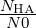

Tutorial 10: Reaction Ensemble and Constant pH ensemble
Contents
2 Theoretical Background
2.1 Constant pH method
2.2 Reaction Ensemble method
3 Example one: homogeneous aqueous solution of acidic species
3.1 System Setup
3.2 Dissociation degree versus concentration
4 Example two: linear weak polyelectrolytes
4.1 System setup
4.2 Titration curves
5 Charge distribution along the chain
1 Introduction
This tutorial introduces the basic features for simulating titratable systems via two different methods, the Constant pH method and the Reaction Ensemble method, pointing out differences and similarities between these two approaches and explaining the reasons to prefer the latter in some particular cases. The first part (example one) of this tutorial will consider a homogeneous aqueous solution of a titratable acidic species HA that can dissociate as follows
|
| (1) |
while the second part (example two) will consider a polyelectrolyte chain formed by a series of titratable monomers bonded together.
Both constant pH and Reaction Ensemble methods are implemented via a Monte Carlo algorithm with the classical Metropolis-Hastings acceptation rule. Here we compare both methods based on the paper published by Landsgesell et al.[1].
2 Theoretical Background
In this tutorial we deal with chemical reactions of the following kind:
|
| (2) |
If N0 = NHA + NA- is the number of titratable groups in solution, a degree of dissociation α can be defined:
|
| (3) |
Another observable is the degree of association which is given by:
|
|
The equilibrium concentration of each species is defined by the equilibrium reaction constant
|
| (4) |
for each species i a(i) = eβ(μi-μi0) = (ci∕ci0)γi denotes the relative activity, μi is the chemical potential, μi0 is the chemical potential under some standard reference conditions, νi is the stoichiometric coefficient, γi is the activity coefficient, ci and ci0 are the concentration of the species i and its standard concentration, respectively. In the case of non-interacting particles (ideal gas) or very dilute solutions (γi ≈ 1) activities are equal to ci∕ci0. In chemical equilibrium, which is defined by ΔG = ∑ iνiμi = 0, we obtain that K = exp(βΔ(G - G0)) = exp(-β ∑ iνiμi0). Therefore we have (in the case of no interactions):
 | (5) |
Equivalently, for reaction (2) and in case of a dilute solutions (γi ≈ 1), equation (5) can be approximated as follows:
|
| (6) |
where Kc carries the dimension 1/volume.
2.1 Constant pH method
In the constant pH method, the acceptance probability for a reaction is
|
| (7) |
and the acceptance probability of a reaction is Pacc =  for a dissociation and Pacc = for an association reaction [1]. Here ΔEpot is the potential energy change due to the reaction, while pH - pKa is an input parameter composed by two terms, pH and -pKa, that represent, respectively, the concentration of H+ ions in the solution and the logarithm in base 10 of the thermodynamic dissociation constant for HA when the system is approximated as a dilute solution (γi ≈ 1):
|
| (8) |
|
| (9) |
The chemical prefactor ±1 defines the direction of the reaction (+1 dissociation, -1 association). When a dissociation move is attempted, the titratable molecule HA is charged and a counterion H+ is randomly placed into the simulation box, while when an association move is attempted, a A– is neutralized and a random counterion H+ is removed from the cell.
2.2 Reaction Ensemble method
A chemical reaction involving n species of type si and with stoichiometric coefficients νi can be written as
|
| (10) |
For such a general reaction, the acceptance probability in the Reaction Ensemble method is defined as
|
| (11) |
Here Kc is the ideal reacting gas quantity introduced above, V the volume, the total change in the number of particles, N0i the number of particles prior to the reaction and ξ is the extent of the reaction, which could assume value +1 (forward reaction) or -1 (backward reaction). Each reaction is proposed with uniform probability.
For reaction (2) eq. (11) can be simplified:
|
| (12) |
Notice that in this case you can also define Ka = Kc∕c0 .
The main difference in the two methods consists in the fact that in the Reaction Ensemble the system pH is determined via the actual proton concentration in the simulation box, while in Constant pH method it represents an input parameter which remains constant during all the simulation.
3 Example one: homogeneous aqueous solution of acidic species
Compile Espresso with the following features in your myconfig.hpp to be set throughout the whole tutorial:
# define ELECTROSTATICS
3.1 System Setup
We start by defining some important input parameters and setting the particles randomly inside the box:
from espressomd import reaction_ensemble
box_l = 15 #side length of our cubic simul box
system = espressomd.System(box_l=[box_l]*3)
system.set_random_state_PRNG()
np.random.seed(seed=system.seed)
# Particle setup
#############################################################
# type 0 = HA
# type 1 = A-
# type 2 = H+
N0 = 50 #number of titratable particles
K_diss = 8.3**(-4) #dissociation costant
# titratable particles (HA)
for i in range(N0):
system.part.add(id=i, pos=np.random.random(3) * system.box_l, type=1)
# counterions (H+)
for i in range(N0, 2 * N0):
system.part.add(id=i, pos=np.random.random(3) * system.box_l, type=2)
For each negatively charged A– particle (type = 1) we put in the simulation box the respective counterion H+ (type = 2) in order to maintain the electroneutrality of the system. Notice that the implementation in Espresso requires that the dimension of the equilibrium constant is consistent with its internal unit of volume; rules for a correct conversion of Ka (experimental) to Kc (in internal units) are explained in the user guide: https://espressomd.github.io/doc4.1.4/advanced_methods.html. The next step is to define the reaction system and seed the pseudo random number generator which is used for the Monte Carlo steps:
#mode="constant_pH_ensemble"
RE=None
mode=="reaction_ensemble"
if(mode=="reaction_ensemble"):
RE = reaction_ensemble.ReactionEnsemble(temperature=1, exclusion_radius=1, seed=42)
elif(mode=="constant_pH_ensemble"):
RE = reaction_ensemble.ConstantpHEnsemble(temperature=1, exclusion_radius=1, seed=42)
RE.constant_pH=7
RE.add_reaction(gamma=K_diss, reactant_types=[0], reactant_coefficients=[1],
product_types=[1, 2], product_coefficients=[1, 1], default_charges=
{0: 0, 1: -1, 2: +1})
system.setup_type_map([0, 1, 2])
You can switch from one method to the other simply by changing the mode parameter from "reaction_ensemble" to "constant_pH_ensemble". Now the system is ready to be simulated.
for i in range(Nreac):
RE.reaction()
Notice that, at this level, we’re not taking into account electrostatic interactions between charged species. Therefore, if you compare the input equilibrium constant Kc and the effective one which can be calculated at the end of a simulation run Kc(eff) = you will obtain Kc ≃ Kc(eff). This is not true when e.g. electrostatic interactions are enabled due to the fact the latter introduces an excess chemical potential.
3.2 Dissociation degree versus concentration
Performing several simulations with constant N0 but varying the dimension of the simulation box it is possible to obtain the dissociation degree α (eq. 3) as a function of the concentration of titratable units. Results are shown in figure 1.
As you can see, only the curve obtained with the Reaction Ensemble method fits the ideal behavior described by the dilution law
|
| (13) |
where ctitr is the concentration of titratable units in the solution, and this is due to the fact that the acceptance rule in Constant pH method does not depend on the volume of the system. As α differs, so will the number of counterions in the cell. This could have a strong impact on screening effects when electrostatic interactions are taken into account. Moreover, in the Constant pH method the real chemical nature of counterions is unknown. In fact, when a HA molecule dissociates at high pH value, the generated H+ would react instantaneously with an OH– ions, so the positively charged ions that remains in solution must represent a different species (e.g. a Na+ cation).
4 Example two: linear weak polyelectrolytes
Weak polyelectrolytes are a family of responsive materials whose application spans the range from flocculation-induced water purification to tissue targeted drug delivery of expensive or cytotoxic medicines. Their properties, however, depend on their specific chemical environment, with details such as pH, salt concentration and valency, and their topology markedly modifying the chemical behavior of their ionizing groups. Here we’re going to study the titration curves of a linear weak polyelectrolyte composed by 50 titratable units with both Reaction Ensemble and Constant pH methods. In this case, we’ll enable electrostatic interactions between charged species in order to correctly describe their properties.
4.1 System setup
First of all, we start to define some important variables and create a dictionary containing the type and the charge for all the species in solution (this could be very useful when you have to handle with a lot of different species in your simulations):
box_l = 56.134
l_bjerrum = 2.0
temperature = 1.0
system = espressomd.System(box_l=[box_l]*3)
# particle setup
N_P = 1 #number of chains
MPC = 50 #monomers per chain
N0 = N_P*MPC #total number of monomers
nNaOH = 0 #number of initial Na+OH-
nHCl = 0 #number of initial H+Cl- (additional H+’s)
type_HA = 0 # type 0 = HA
type_A = 1 # type 1 = A-
type_H = 2 # type 2 = H+
type_OH = 3 # type 3 = OH-
type_Na = 4 # type 4 = Na+
type_Cl = 5 # type 5 = Cl-
charges={}
charges[type_HA] = 0
charges[type_A] = -1
charges[type_H] = 1
charges[type_OH] = -1
charges[type_Na] = 1
charges[type_Cl] = -1
Here, we’ve defined the type and the charge of polymer titratable units (HA = A– + H+ ), counterions H+, and additional ionic species (Na+OH– and H+Cl– ) that can be inserted inside the simulation box. Now we have to set up all these particles and to define all the interactions.
bond_l = 1.2 #bond length
kbond = 100 #force constant for harmonic bond
harmonic_bond = interactions.HarmonicBond(k=kbond, r_0=bond_l)
system.bonded_inter.add(harmonic_bond)
# non-bonding interactions parameters
lj_eps = 1.0
lj_sig = 1.0
lj_cut = 1.12246
lj_shift = 0.0
# setting up the polymer
positions = polymer.positions(
n_polymers=N_P, beads_per_chain=MPC, bond_length=bond_l, seed=13)
for polymer in positions:
for i, pos in enumerate(polymer):
id = len(system.part)
system.part.add(id=id, pos=pos, type=type_A, q=charges[type_A])
if i > 0:
system.part[id].add_bond((harmonic_bond, id - 1))
# setting up counterions
for i in range(N0):
system.part.add(pos=np.random.random(3) * system.box_l, type=type_H,
q=charges[type_H])
# setting up other background ions
# - Na+ and OH-
for i in range(nNaOH):
system.part.add(pos=np.random.random(3) * system.box_l, type=type_OH,
q=charges[type_OH])
for i in range(nNaOH):
system.part.add(pos=np.random.random(3) * system.box_l, type=type_Na,
q=charges[type_Na])
# - (additional) H+ and Cl-
for i in range(nHCl):
system.part.add(pos=np.random.random(3) * system.box_l, type=type_H,
q=charges[type_H])
for i in range(nHCl):
system.part.add(pos=np.random.random(3) * system.box_l, type=type_Cl,
q=charges[type_Cl])
As already explained, we need to enable electrostatic interactions to correctly simulate the physics of this type of system.
from espressomd import electrostatics
p3m = electrostatics.P3M(prefactor = l_bjerrum*temperature, accuracy=1e-3)
system.actors.add(p3m)
To titrate a weak polyelectrolytic chain, which is composed by N0 titratable units with a certain pKa, in the Reaction Ensemble, we need to modulate the pH of the environment. To do this, we have to add additional H+ ions, increasing the pH, or OH– ions, to decrease it. We have also to introduce the respective counterions (Cl– or Na+) to preserve the electroneutrality of the system. Finally, we have to take into account also the autoprotolysis of water (H2O = H+ + OH– ) beside the main dissociation reaction.
# 0.00269 is the conversion constant from mol/L to internal units
# when sigma is 3.55 angstrom
K_w = 10.0**(-14)*0.02694**2 #eq constant for autoprotolysis
# notice that here we converted the value from (mol/L)^2 to
# internal units
#HA <--> A- + H+
RE.add_reaction(gamma=K_diss, reactant_types=[type_HA],
reactant_coefficients=[1], product_types=[type_A, type_H],
product_coefficients=[1,1], default_charges={type_HA: charges[type_HA],
type_A: charges[type_A], type_H: charges[type_H]})
#H2O autoprotolysis
RE.add_reaction(gamma=(1/K_w), reactant_types=[type_H, type_OH],
reactant_coefficients=[1,1], product_types=[], product_coefficients=[],
default_charges={type_H: charges[type_H], type_OH: charges[type_OH]})
Please notice that the order in which the species are written in reactants and products lists is very important because, when a reaction is performed, the first species in the reactants list is replaced by the first species in the product lists, the second reactant species is replaced by the second product species, and so on. Moreover, if the reactant list has more species than the products list, reactant molecules in excess are deleted from the system, while if the products list has more species than the reactants list, product molecules in excess are created and randomly placed inside the simulation box. For example, reversing the order of products in our reaction (i.e. from product_types=[type_H, type_A] to product_types=[type_A, type_H]), a neutral monomer would be positively charged and a negative monovalent counterion would be randomly placed inside the cell.
Due to the fact that, at a certain pH, the ionization degree of a weak polyelectrolytes depends on its spatial conformation, in order to obtain correctly averaged values we have also to couple the reaction algorithm with MD simulations.
system.time_step = 0.01
system.cell_system.skin = 10. #only for tutorial purposes
system.cell_system.max_num_cells = 2744
system.thermostat.set_langevin(kT=temperature, gamma=1.0, seed=42)
Finally, we are ready to run the simulation!
RE.reaction(50)
system.integrator.run(500)
print(i,") HA", system.number_of_particles(type=type_HA), "A-",
system.number_of_particles(type=type_A), "H+",
system.number_of_particles(type=type_H), ’OH-’,
system.number_of_particles(type=type_OH), ’Cl-’,
system.number_of_particles(type=type_Cl), ’NA+’,
system.number_of_particles(type=type_Na))
4.2 Titration curves
For a solution of weak acidic molecules with a certain pKa = -log 10(Kc∕c0), the trend of α as function of pH is described by the Henderson-Hasselbalch equation:
|
| (14) |
However, when titratable units are bonded together in a polyelectrolyte chain their effective pKa(eff) differs from the ideal one (pKa); this can be explained by the fact that the charge carried by a dissociated monomer tends to partially inhibit the dissociation of its neighbors, and this results into a lower total degree of dissociation with respect to the non-bonded acidic units case. Anyway, this effect can be partially compensated by the presence of counterions, which are able to screen repulsive interactions between dissociated monomers. As you can observe in figure 2, Constant pH and Reaction Ensemble method results are very similar at high pH values, but they show very pronounced differences at low pH values. More in details, pKa(eff) tends to the ideal one when the concentration of H+ is high. This depends on the fact that with Reaction Ensemble method we have to inject a strong acid (H+Cl– ) in order to titrate the polymer, and this results in a more salty solution with a strong screening power. This behavior would be reversed in case of a weak poly-base, with superimposable curves at low pH values and the Reaction Ensemble one approaching the ideal one when the amount of OH– ions becomes relevant.
5 Charge distribution along the chain
Figure 3 shows the mean charge assumed by each monomer during the simulation as a function of its position along the chain. As you can observe, monomers lying at the extremities tend to be more charged than those lying in the innermost regions. This could be easily explained thinking that the ends of the chain can better arrange in space in order to minimize repulsive interactions between charges. This results do not depend on the method, i.e. the shape of the curve at a certain dissociation degree would be te same also with the Constant pH; however, as previously discussed, at a certain value pH - pKa, the total dissociation degree is method-dependent, so the Constant pH curve would be shifted to lower mean charge values for a weak poly-acid at high pH values.
References